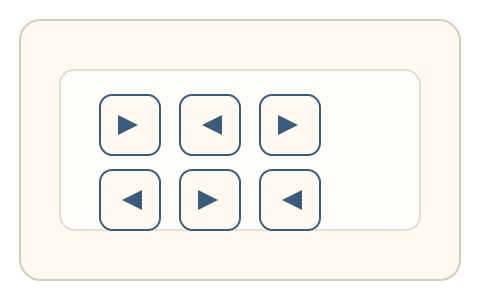
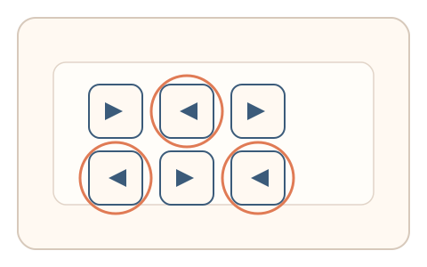

#74
视觉思考范式：文字与符号
已扩展
镜像字母偏差
在正常与镜像字母混排中让用户圈出“看起来不对”的字符，以圈选顺序与停顿验证真实性。
概念原文
混合正常与镜像字母，要求用户快速圈出“看起来不对”的字符；同时记录圈选顺序与停顿时长。
依赖人类对字母方向性的强偏置与错误模式。
研究背景
人类阅读对字母方向性有强偏置，镜像字母会引发更长的识别时间与特定错误模式。通过记录圈选顺序、停顿与回撤，可提取稳定的人类感知特征。
核心机制
- 混合呈现正常与镜像字母。
- 用户快速圈出“看起来不对”的字符。
- 记录圈选顺序、停顿与回撤。
- 多轮随机字母与字体降低模板化。
用户流程
- 步骤 1：用户看到混排字母阵列。
- 步骤 2：用户圈选镜像或异常字符。
- 步骤 3：系统分析顺序与节奏并判定。
判定信号
圈选顺序与反应时
人类识别镜像字母存在稳定的耗时梯度。
回撤次数与错误类型
真实用户会出现方向性偏差与纠错。
判定逻辑
顺序与反应时需符合人类偏置分布；过度快速或零误差的行为判异常。
对抗面
- 脚本检测镜像字母并直接圈选
- 重放真实用户的圈选序列
防御与缓解
- 随机化字母、字体与位置
- 加入轻微噪声或字形扰动降低直接识别
- 叠加鼠标轨迹与停顿信号进行多信号判定
可达性与风险
提供更大字号与慢速模式，对阅读障碍或低视力用户提供替代任务。
- 语言背景差异导致方向性偏差不同
- 阅读障碍用户可能出现误拒
可视化状态

状态 1：镜像混排
正常与镜像字母混合呈现。

状态 2：圈选异常
用户圈选“看起来不对”的字符。

状态 3：偏差判定
根据顺序与停顿形成判定。
参考资料
Mirror writing
说明镜像字形与方向性识别差异。
Mental rotation
说明方向变化对识别时间的影响。